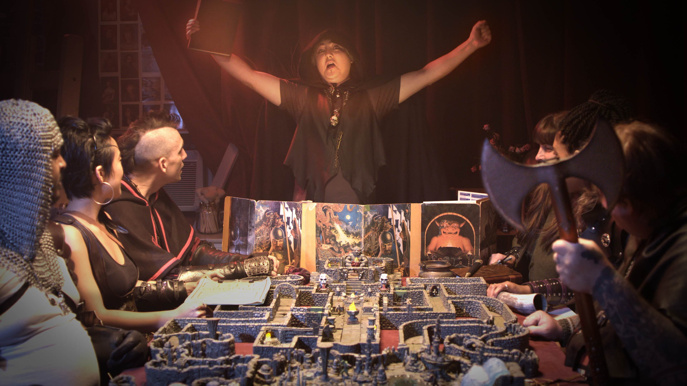

I believe everyone should at least once in their life experience a good session of Dungeons and Dragon (D&D for short). There are many reasons why D&D can enrich a person's life.
My first reason would be due to basic human interaction. Now it may not seem like basic human interaction is something that many people are lacking but I would argue that reality is quite the contrary. Once a person becomes an adult and is freed from the responsiblities and opportunities of childhood like school, clubs and sports, it becomes increasingly difficult to go through each day with any meaningful human interaction. Sure, most of us interact with many people at our jobs but is it really meaningful? Are the people that we interact with at our workplace our friends or are they just an innumerable group of indistinguishable people that we are forced to intact with for a time and then move on to something else. Interaction like the latter barely even registers on the scope of our day let alone provides us with any sort of enrichment like happiness.
D&D on the other hand, offers a setting where one can rutinely interact with small group of individuals and provides a wonderful groundwork to building friendships. This is important at any age. Since many D&D campaigns last quite a long time, sometimes over a year, friends made during these sessions can very easily become life-long friends.
Another important reason why everyone should experience Dungeons and Dragons is because of the story. D&D campaigns are fantastical and being part of a group makes you one of the storytellers. While every group has a Dungeon Master (DM) who is responsible for telling the story as well as other responsiblities, it is the group as a whole who dictate where the story goes. During the story players are often put in situations that difficult to overcome or have serious ramifications on the story being told. As an example, perhaps you are presented witha boss fight where you enemy greatly outnumbers you or is much more powerful than your party. Or perhaps you are in a sticky deplomacy situation within a kindom of the land and only choice words and actions can save the day. Overcoming these scenarios requires abstract thought and problem solving. As a player, not only are you concerned with keeping your character alive and overcoming obsicals but your also concerned with how you do it. Players need to 'stay in character' as it were or in other words they need to play their character in such a way as to relfect that character's personality, background, training and belief. This level of abstract thought and problem solving in addition to being quite fun is also great at keeping the mind sharp. Children and teenagers who are still developing can greatly benifit from rutine exercise of the higher level abstract thought and problem solving that is presented in D&D.